Zum SkifahrenShuttle 250 m · Jouvenceaux 6 Min. mit Auto
Die Idee
Um die Landschaft herum gestaltet.
Am Anfang stand eine einfache Idee: Innen und Außen sollten sich wie Teile desselben Raums anfühlen.
Fenster, Spiegel und die große runde Öffnung holen Licht, Bäume und Berge ins Innere. Die Landschaft verändert sich im Tages- und Jahresverlauf – und die Wohnung mit ihr.
Soft Wow Cabin liegt in Grand Villard, einem grünen Wohngebiet von Sauze d’Oulx. In etwa 15 Minuten, nahezu ebenerreicht man zu Fuß das Zentrum des Ortes.
Nah genug, um Sauze zu Fuß zu genießen, und zugleich ruhig genug, damit zu Hause Bäume, Licht und Berge die Hauptrolle übernehmen.
„Innen und Außen werden Teil derselben Landschaft.“
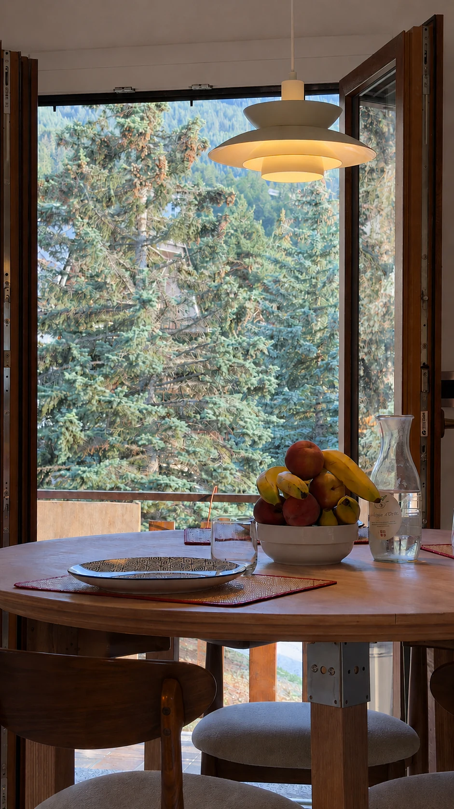
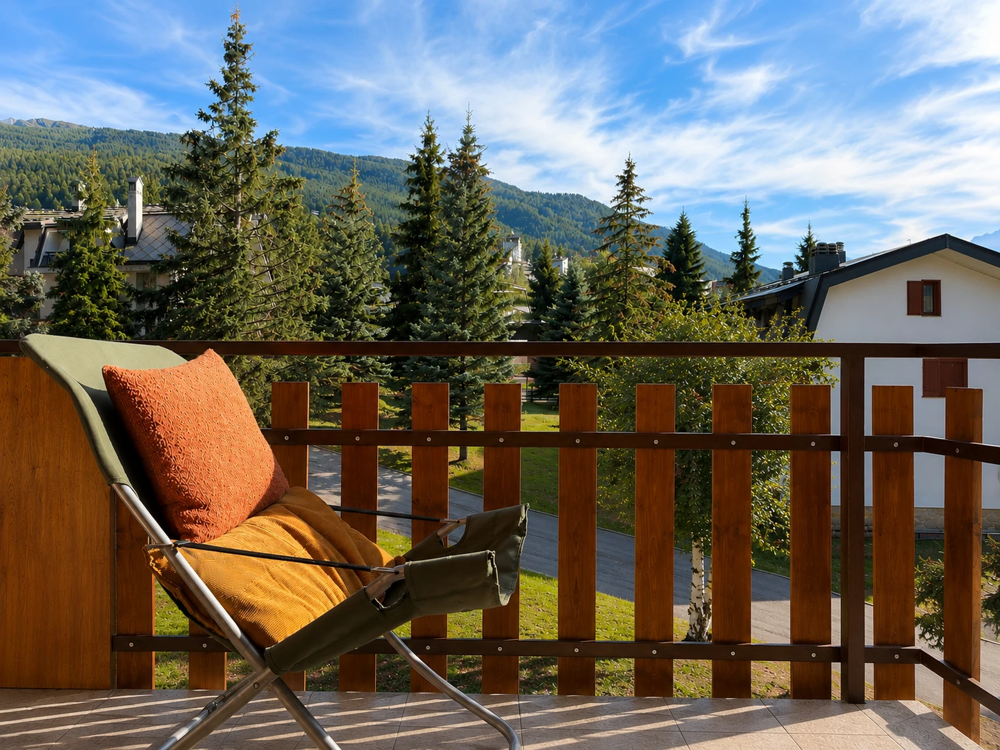
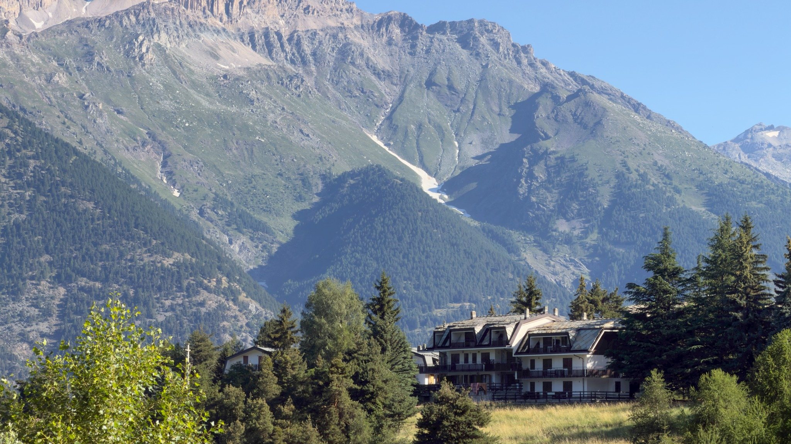
Grand Villard
Ein Zuhause mitten im Grünen.
Hier sieht man die Wohnanlage von Soft Wow Cabin von Sauze d’Oulx aus: mitten im Grünen, mit den Bergen im Hintergrund und das Ortszentrum in etwa 15 Minuten zu Fuß über einen weitgehend ebenen, sonnigen Weg erreichbar.
Die Cabin erleben
Räume, die sich den Menschen anpassen, die sie bewohnen.
Jedes Element erfüllt mehr als eine Funktion, ohne die visuelle Ruhe zu verlieren. Die Cabin verändert sich mit dem Licht, den Jahreszeiten und der Art, wie man sie nutzt.
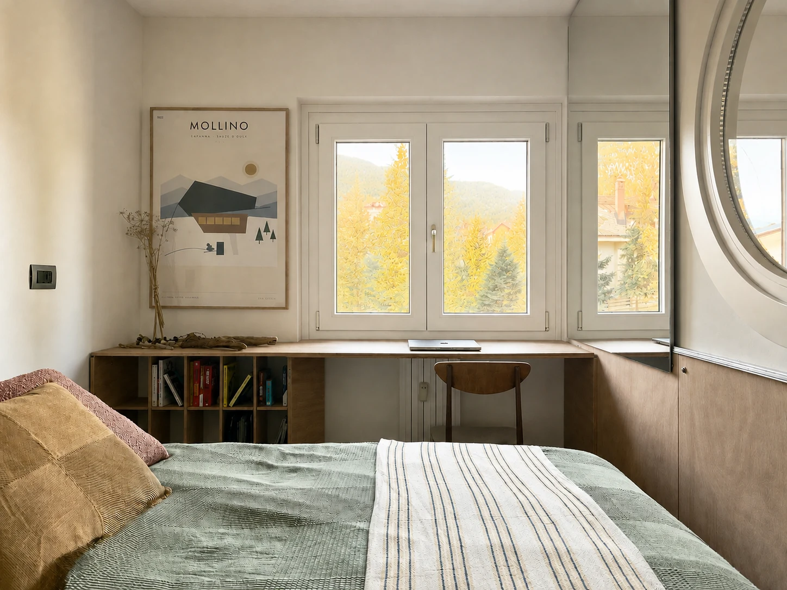
SCHLAFZIMMERRuhen, lesen, arbeiten: Durch die Fenster kommt die Landschaft ins Zimmer.
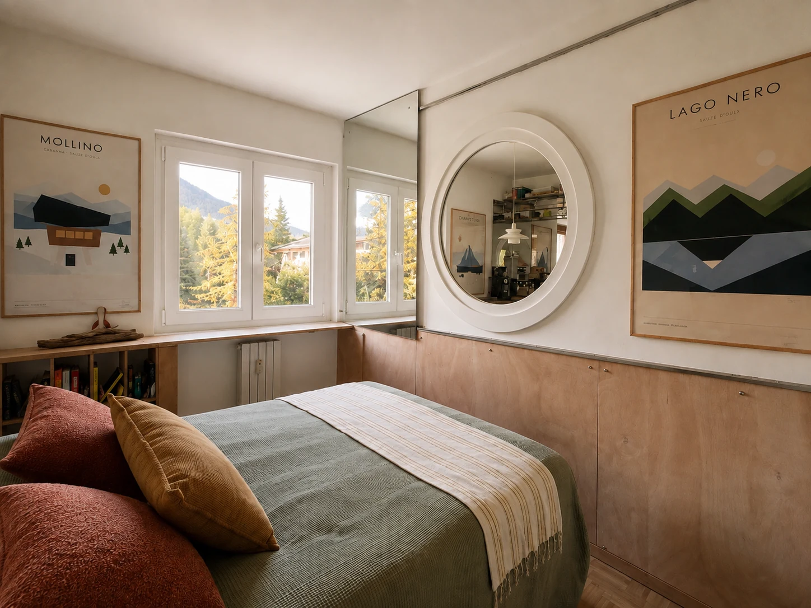
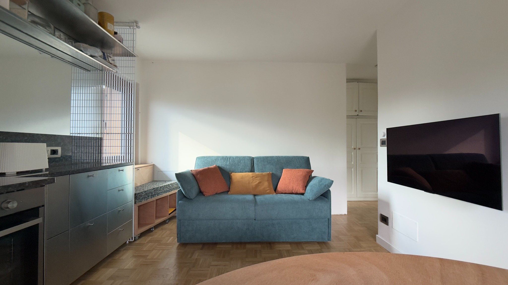
WOHNBEREICHTagsüber Wohnzimmer, nachts ein echtes zweites Doppelbett.
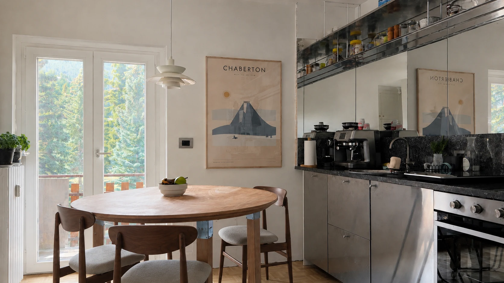
KÜCHEZum wirklichen Kochen gemacht – nicht nur zum Anschauen.
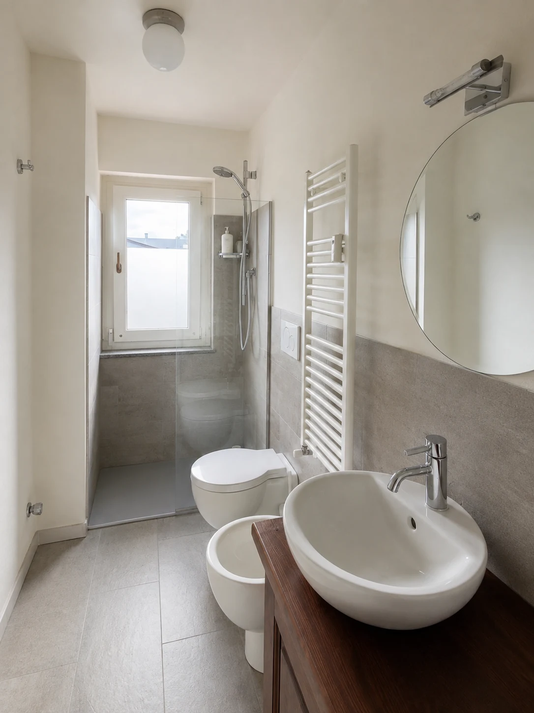
BADKompakt, hell und auf das Wesentliche abgestimmt.INNEN & AUSSENDie Bäume werden Teil des Innenraums.
SCHLAFZIMMER
Ruhig und hell, mit maßgefertigten Okoumé-Möbeln, Doppelbett und einer 25 cm hohen Premium-Matratze Falomo „Sbadiglio“. Ein ausklappbarer Tisch schafft bei Bedarf einen Platz zum Arbeiten, Lesen oder Lernen direkt am Fenster.
KÜCHE
Voll ausgestattet und für echtes Kochen gedacht: Labradorit-Arbeitsplatte, Backofen, Geschirrspüler, Wasserkocher und Toaster, dazu die Küchenutensilien, die wir selbst benutzen. Kaffee hat sein eigenes Ritual – gleich weiter unten.
WOHNBEREICH
Das Schlafsofa Truman von Felis verwandelt den Wohnbereich in einen Schlafbereich mit einer echten 140-cm-Doppelmatratze. Ein LG OLED TV und ein Sonos Era 100 ergänzen den Raum – jeder mit seiner eigenen Funktion.
Es ist ein richtiges Bett – und so bequem, dass es sogar mein Favorit ist, wenn wir selbst hier schlafen.
Slow Coffee Philosophy
Das Kaffeeritual.
Zwei Arten, den Tag zu beginnen.
Wenn Zeit ist, beginnen wir mit den Bohnen. Die Sage Barista Touch mahlt den Kaffee frisch und führt durch Espresso und Milchgetränke: ein paar zusätzliche Minuten, die zum täglichen Ritual werden.
Boutic Caffè · Maestri del Gusto, TurinFür den ersten Kaffee steht eine kleine Menge Bohnen von Boutic Caffè, einer traditionsreichen Turiner Rösterei, bereit. Sorgfältige Auswahl der Herkunft, Terroir und langsame Röstung: eine Philosophie, die Boutic mit “espressamente lento” zusammenfasst – und die perfekt zu dieser Cabin passt. Boutic Caffè entdecken ↗
Nespresso · wenn es einfach sein sollNeben der Sage gibt es auch eine Nespresso-Maschine: schnell und praktisch. Eine erste Auswahl an Nespresso- und kompatiblen Lavazza-Kapselnliegt bereit – der erste Kaffee wartet also schon.
NACH HAUSE KOMMEN
Komm nach Hause.
Nach einem Tag in den Bergen ändert sich der Rhythmus. Ski, Schuhe, Helme und Fahrräder bleiben im Ski- & Bike-Raum; drinnen begleiten Holz und Licht die Rückkehr.
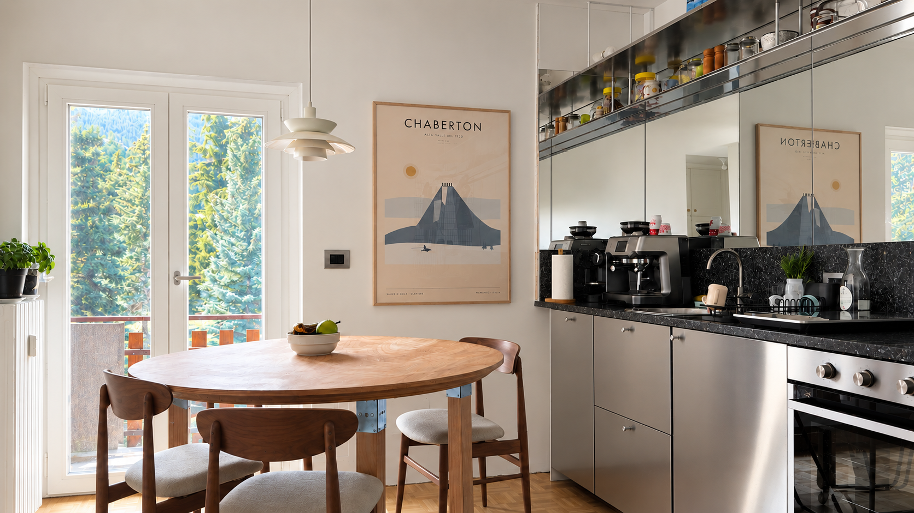
ENERGIE & KOMFORT
Ski & Bike-Raum
Privater, abschließbarer Raum im selben Gebäude: Ski, Schuhe, ein Fahrrad innen, Halterungen für weitere Räder, Alpineheat-Schuhtrockner, E-Bike-Steckdosen und eine Bank zum Umziehen.
Energieklasse B
Dämmung und Fenster verbessern den Komfort zu jeder Jahreszeit; gemeinschaftliche Solarmodule unterstützen den Allgemeinstrom.
Überdachter Stellplatz + EV
Privater überdachter Stellplatz mit Ohme PRO Wallbox, Type-2-Anschluss und festem Kabel. Das Laden des E-Autos ist im Aufenthalt enthalten; der Hausanschluss ist auf 6 kW begrenzt.
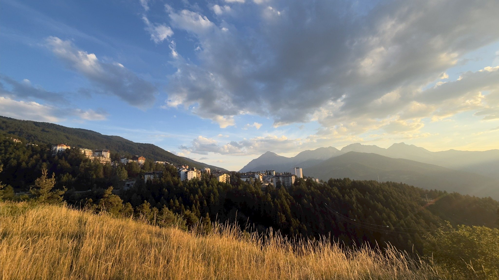
Sauze d’Oulx
Ort und Berg.
Grand Villard lässt Sauze in zwei Rhythmen erleben: Ort, Restaurants und Lifte zu Fuß erreichbar; Grün und Ruhe, sobald man nach Hause kommt. Bei Sonnenuntergang verschmilzt der Ort wieder mit Wald und Bergen – mit jener Landschaft, zu der sich die Cabin zu jeder Jahreszeit öffnet.
Ein Ausgangspunkt in den Alpen
Die Berge, das ganze Jahr.
Soft Wow Cabin ist ein Ausgangspunkt, um Sauze und das obere Susatal zu ganz unterschiedlichen Jahreszeiten zu erleben: Schnee und Skifahren im Winter, Wege, Bikes und Hochgebirgsstraßen, sobald das Grün zurückkehrt.
Sauze d’Oulx ist eines der Tore zur Vialattea, dem großen internationalen Skigebiet, das Sauze, Sestriere, Sansicario, Cesana, Claviere, Pragelato und Montgenèvre in Frankreich verbindet.
Rund 400 km Pisten · über 100 km im Bereich Sauze
Von Sportinia führen Sauzes Pisten durch Wälder und hochalpines Gelände in das gesamte Skigebiet. Wer Ski und Schuhe nicht jeden Tag mit nach Hause nehmen möchte, findet im Clotes Ski Center auch ein beheiztes Skidepot direkt am Clotes-Sessellift.
Wenn der Schnee verschwindet, wird derselbe Berg zu einer Landschaft zum Entdecken: Wandern, MTB, E-Bikes, Downhill und Enduro, durch Wälder, Täler und hochalpine Panoramen.
Faure Sport und 3Sixty bieten vor Ort Fahrräder und E-Bikes sowie Winterausrüstung zum Verleih.
Strada dell’Assietta
Für alle, die zwei Räder lieben, ist dies eine der legendären Routen der Region: eine spektakuläre Schotterstraße in großer Höhe entlang des Kamms zwischen dem oberen Susatal und dem Val Chisone – auch bei Motorradfahrern sehr beliebt.
Motorrad, Enduro, MTB oder E-Bike: Zwei Räder sind hier kein Nebengedanke. Der überdachte Stellplatz und der Ski- & Bike-Raum ermöglichen es, Helme und Ausrüstung draußen zu lassen, sich umzuziehen und Schuhe zu trocknen, bevor man die Cabin betritt.
Ein Detail, das uns wichtig ist: Diese Cabin wurde auch von jemandem gestaltet, der die Berge selbst auf zwei Rädern erlebt hat.
Anreise
Mitten in den Alpen und dennoch gut erreichbar.
Soft Wow Cabin liegt in Grand Villard, Sauze d’Oulx, etwa 10 km von Oulx entfernt. Die Cabin ist bequem mit dem Auto, mit dem Zug über Oulx oder per Flug über den Flughafen Turin erreichbar.
↗
01
Mit dem Auto
Aus Turin und dem PiemontÜber die A32 durch das Susatal bis Oulx.
Aus Mailand und der LombardeiRichtung Turin fahren, dann die A32 Richtung Bardonecchia–Fréjus nehmen.
Aus FrankreichÜber den Fréjus-Tunnel oder Montgenèvre–Claviere.
⌁
02
Mit dem Zug
Der nächstgelegene Bahnhof ist Oulx, am Fuß des Berges.
Oulx → Sauze d’Oulxetwa 10 km · 10–15 Minuten
Ab Oulx geht es mit Taxi oder Linienbus weiter; viele Verbindungen sind auf die wichtigsten Zugankünfte abgestimmt.
✈
03
Mit dem Flugzeug
Torino Caselle ist der nächstgelegene Flughafen.
Mietwagen, Taxis und Transfers stehen bei Ankunft zur Verfügung. Der Flughafen ist außerdem per Zug und Bus mit Turin verbunden.
Verbunden mit der Region
Drei Motive. Drei Arten, diese Berge zu erzählen.
Mollino, Chaberton und Lago Nero bringen drei Perspektiven auf die Region in die Wohnung: Kultur, Geografie und Landschaft.
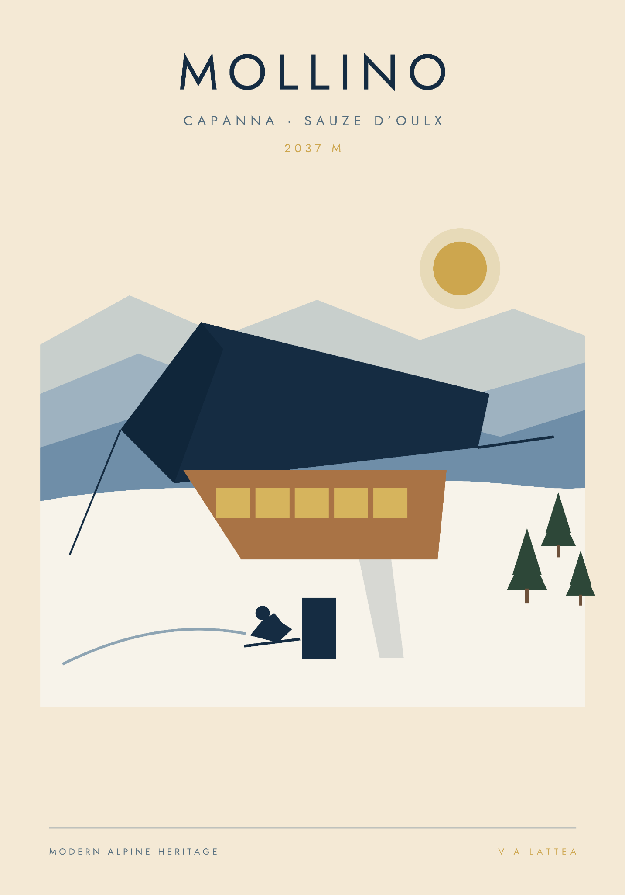
Carlo Mollino · Alpine Moderne
Carlo Mollino, einer der originellsten italienischen Architekten und Designer des 20. Jahrhunderts, verstand die Berge als Ort, an dem Architektur, Landschaft und Moderne aufeinandertreffen. Seine alpinen Projekte – darunter die berühmte Casa del Sole in Cervinia – entwarfen eine neue Art, in den Alpen zu wohnen, jenseits der Nachahmung des traditionellen Chalets.
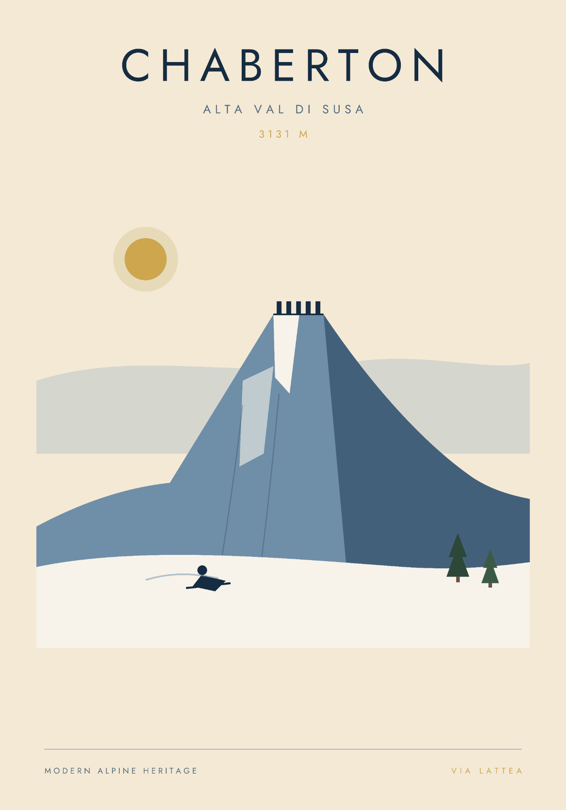
Chaberton · Geografie
Auf 3.131 Metern, erhebt sich der Mont Chaberton über dem oberen Susatal und der französischen Grenze. Auf seinem Gipfel liegt das Fort Chaberton, eine außergewöhnliche Hochgebirgsfestung, die zwischen dem späten 19. und frühen 20. Jahrhundert erbaut wurde. Die acht Artillerietürme, die einst den Gipfel prägten, machten die Silhouette des Berges unverwechselbar – ein Ort, an dem Landschaft, Grenze und alpine Militärgeschichte zusammentreffen.
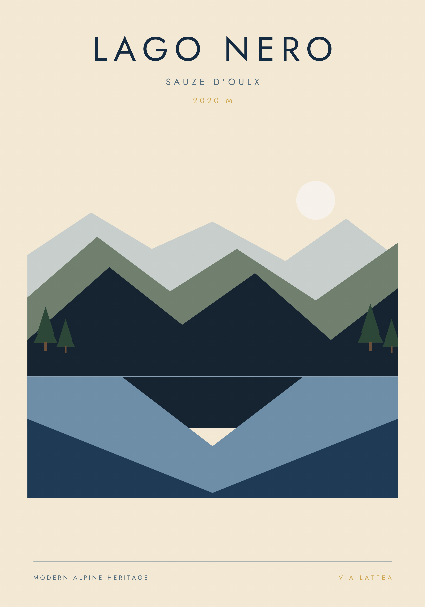
Lago Nero · Landschaft
Auf 2.020 Metern, liegt der Lago Nero in einer Mulde zwischen Cima Fournier und den Monti della Luna, umgeben von Lärchen und hochalpiner Landschaft. Sein Name erinnert an den tiefen, dunklen Farbton seines Wassers. Er zeigt die stillere Seite dieser Berge: Wald, Wasser, Licht und Ruhe.
Sauze erleben
Was ist heute los?
Unser Guide erzählt von den Orten und Dingen, die wir mögen. Für Veranstaltungen, Aktivitäten und Informationen, die sich im Jahresverlauf ändern, verweisen wir lieber direkt auf die lokale Quelle.
Tourismusbüro Sauze d’Oulx
Informationen zu Veranstaltungen, Winter- und Sommersport, Restaurants, Museen, Burgen, Festungen und Abteien.
Das Wetter gehört zum Erlebnis Sauze: Schnee, Wind, Sonne und Temperatur prägen den Tag – und oft auch die Pläne. Deshalb hat es im Projekt seinen eigenen Platz. Auch in Sauze ist es zu finden, wie ein kleines digitales Fenster auf die Bedingungen am Berg.
Diese Wetterseite haben wir selbst gestaltet; sie ist auch in Sauze zu finden. Falls das Panel im Browser nicht lädt, WeatherFrame öffnen ↗.
SOFT WOW CABIN
Unser Zuhause in den Bergen
Soft Wow Cabin ist in erster Linie unser Zuhause in Sauze d’Oulx. Wir haben es für uns selbst gestaltet – mit Aufmerksamkeit für Licht, Materialien und die kleinen Dinge, die einen Tag in den Bergen angenehm machen. Wenn wir nicht hier sind, teilen wir es mit Menschen, die dieselbe Art suchen, diesen Ort zu erleben: nah an der Landschaft und ohne Eile.
Aufenthalt in Soft Wow Cabin
Soft Wow Cabin erleben.
Wenn wir das Apartment nicht selbst nutzen, teilen wir es mit Menschen, die Sauze mitten in der Landschaft erleben und jeden Moment in Ruhe genießen möchten. Das ist für uns Soft Wow: ein Staunen, das sich nach und nach entfaltet – ganz ohne Eile.

 Winter · VialatteaInteraktive Karte entdecken ↗
Winter · VialatteaInteraktive Karte entdecken ↗